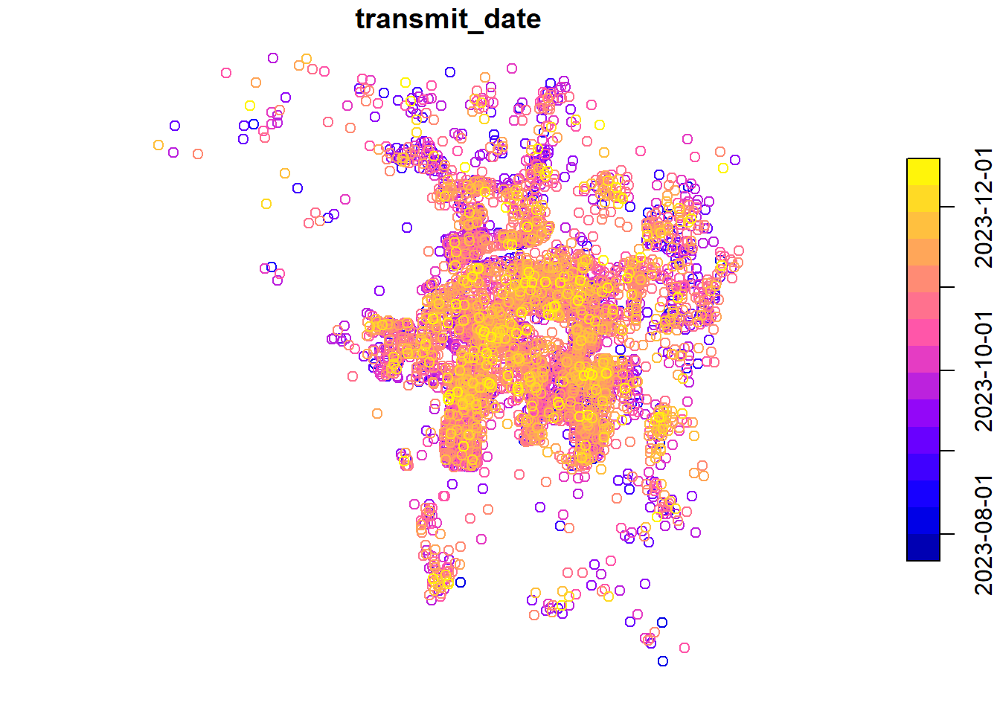
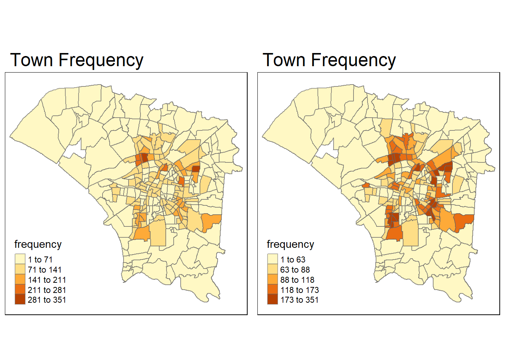

pacman::p_load(sf, sfdep, tmap, plotly, tidyverse)Importing the packages
Data Wrangling
Importing the data 1.0
Tainan
tainan <- st_read(dsn = "data/geospatial",
layer = "TAINAN_VILLAGE") %>% st_transform(crs = 3824)Reading layer `TAINAN_VILLAGE' from data source
`C:\FieryCake\IS415-GAA\take_home_Ex\take_home_Ex_02\data\geospatial'
using driver `ESRI Shapefile'
Simple feature collection with 649 features and 10 fields
Geometry type: POLYGON
Dimension: XY
Bounding box: xmin: 120.0269 ymin: 22.88751 xmax: 120.6563 ymax: 23.41374
Geodetic CRS: TWD97plot(st_geometry(tainan))
Dengue Daily
dengue <- read_csv("data/aspatial/Dengue_Daily.csv")Rows: 106861 Columns: 26
── Column specification ────────────────────────────────────────────────────────
Delimiter: ","
chr (23): 個案研判日, 性別, 年齡層, 居住縣市, 居住鄉鎮, 居住村里, 最小統計區, 最小統計區中心點X, 最小統計區中心點Y, 一級...
dbl (1): 確定病例數
date (2): 發病日, 通報日
ℹ Use `spec()` to retrieve the full column specification for this data.
ℹ Specify the column types or set `show_col_types = FALSE` to quiet this message.Making the list of towns required - Found in assignment brief
town_ids <- c("D01","D02","D04","D06","D07","D08","D32","D39")Filtering tainan villages based on the above list
tainan_filtered_villages <- tainan %>%
filter(TOWNID %in% town_ids)tainan_filtered_villagesSimple feature collection with 258 features and 10 fields
Geometry type: POLYGON
Dimension: XY
Bounding box: xmin: 120.0627 ymin: 22.89401 xmax: 120.2925 ymax: 23.09144
Geodetic CRS: TWD97
First 10 features:
VILLCODE COUNTYNAME TOWNNAME VILLNAME VILLENG COUNTYID COUNTYCODE
1 67000350032 臺南市 安南區 青草里 Qingcao Vil. D 67000
2 67000270011 臺南市 仁德區 保安里 Bao'an Vil. D 67000
3 67000370005 臺南市 中西區 赤嵌里 Chihkan Vil. D 67000
4 67000330004 臺南市 南區 大成里 Dacheng Vil. D 67000
5 67000350028 臺南市 安南區 城北里 Chengbei Vil. D 67000
6 67000350030 臺南市 安南區 城南里 Chengnan Vil. D 67000
7 67000370009 臺南市 中西區 法華里 Fahua Vil. D 67000
8 67000350017 臺南市 安南區 海南里 Hainan Vil. D 67000
9 67000350049 臺南市 安南區 國安里 Guo'an Vil. D 67000
10 67000350018 臺南市 安南區 溪心里 Xixin Vil. D 67000
TOWNID TOWNCODE NOTE geometry
1 D06 67000350 <NA> POLYGON ((120.1176 23.08387...
2 D32 67000270 <NA> POLYGON ((120.2304 22.93544...
3 D08 67000370 <NA> POLYGON ((120.2012 22.99966...
4 D02 67000330 <NA> POLYGON ((120.1985 22.98147...
5 D06 67000350 <NA> POLYGON ((120.1292 23.06512...
6 D06 67000350 <NA> POLYGON ((120.1246 23.06904...
7 D08 67000370 <NA> POLYGON ((120.2094 22.98452...
8 D06 67000350 <NA> POLYGON ((120.175 23.02218,...
9 D06 67000350 <NA> POLYGON ((120.1866 23.02766...
10 D06 67000350 <NA> POLYGON ((120.1834 23.06086...Plotting the map to see if it is what we want
plot(st_geometry(tainan_filtered_villages))
Filtering dengue dataset to only fall between epidemiology week 31-50, 2023.
Changing first column to transmit date - easier
colnames(dengue)[1] <- "transmit_date"Changing column type to date
dengue$transmit_date <- as.Date(dengue$transmit_date)Filtering for week 31 - 50
Epidemoiology weeks source- https://www.hpsc.ie/notifiablediseases/resources/epidemiologicalweeks/
dengue_filtered <- dengue %>% filter(between(transmit_date, as.Date('2023-07-30'), as.Date('2023-12-16')))Only keeping date transmit , lat and long
dengue_filtered <- select(dengue_filtered,1,10,11)
colnames(dengue_filtered)[2] <- "lng"
colnames(dengue_filtered)[3] <- "lat"Checking of CRS 1.1
st_crs(tainan_filtered_villages)Coordinate Reference System:
User input: EPSG:3824
wkt:
GEOGCRS["TWD97",
DATUM["Taiwan Datum 1997",
ELLIPSOID["GRS 1980",6378137,298.257222101,
LENGTHUNIT["metre",1]]],
PRIMEM["Greenwich",0,
ANGLEUNIT["degree",0.0174532925199433]],
CS[ellipsoidal,2],
AXIS["geodetic latitude (Lat)",north,
ORDER[1],
ANGLEUNIT["degree",0.0174532925199433]],
AXIS["geodetic longitude (Lon)",east,
ORDER[2],
ANGLEUNIT["degree",0.0174532925199433]],
USAGE[
SCOPE["Horizontal component of 3D system."],
AREA["Taiwan, Republic of China - onshore and offshore - Taiwan Island, Penghu (Pescadores) Islands."],
BBOX[17.36,114.32,26.96,123.61]],
ID["EPSG",3824]]Joining the data of filtered village and dengue
dengue_filtered# A tibble: 25,475 × 3
transmit_date lng lat
<date> <chr> <chr>
1 2023-07-30 120.220182286 22.976075790
2 2023-07-30 120.218036763 22.980068070
3 2023-07-30 120.235449178 23.013736726
4 2023-07-30 120.245579790 23.019322681
5 2023-07-30 120.246524983 23.018206041
6 2023-07-30 120.226597184 23.016947543
7 2023-07-30 120.459990679 23.599175697
8 2023-07-30 120.234949811 23.015998065
9 2023-07-30 120.234949811 23.015998065
10 2023-07-30 120.247723767 23.011129228
# ℹ 25,465 more rowsChanging class from character to numeric
dengue_filtered$lng <- as.numeric(dengue_filtered$lng)Warning: NAs introduced by coerciondengue_filtered$lat <- as.numeric(dengue_filtered$lat)Warning: NAs introduced by coercionNA Values are introduced and we have to remove them
Removing NA Values
dengue_filtered_complete <- na.omit(dengue_filtered)Transforming from decimal point to 3824
sf_object <- st_as_sf(dengue_filtered_complete, coords = c("lng", "lat"), crs = 4326) %>% st_transform(crs = 3824)Finding the intercept
Making it a union so that finding points within this union is faster
merged_polygon <- st_union(tainan_filtered_villages)class(merged_polygon)[1] "sfc_POLYGON" "sfc" class(sf_object)[1] "sf" "tbl_df" "tbl" "data.frame"Intersection
denguePointsInTainan <- st_intersection(sf_object, merged_polygon)Warning: attribute variables are assumed to be spatially constant throughout
all geometriesThis one is to filter points found only in big polygon - it is faster than finding points in each polygon first
Finding points that fall within the different vilages, concetenating TOWNID and VILL ENG
town_dengue_intersections <- st_intersection(denguePointsInTainan, tainan_filtered_villages) %>%
mutate(town = paste0(as.character(TOWNID)," ",as.character(VILLENG)))Comment: Finding intersection of each point mapped to each town Will need to push it into a rds as it takes very long to compute
Write to RDS
write_rds(town_dengue_intersections,"data/rds/town_dengue_intersections.rds")Read from RDS
town_dengue_intersections_rds <-read_rds("data/rds/town_dengue_intersections.rds")
town_dengue_intersections_rds <- select(town_dengue_intersections_rds,1,13)plot(denguePointsInTainan)
tmap_mode("plot")tmap mode set to plottingtm_shape(tainan_filtered_villages) +tm_polygons()+
tm_shape(denguePointsInTainan) +tm_dots()
Joining the 2 datasets together
df <- st_drop_geometry(town_dengue_intersections_rds)
df <- data.frame(df)
colnames(df)[2] <- "town"
tainan_filtered_villages <- tainan_filtered_villages %>%
mutate(town = paste0(as.character(TOWNID), " ", as.character(VILLENG)))
tainan_filtered_villages2<-select(tainan_filtered_villages,4,5,8,11,12)
test2 <- left_join(df,tainan_filtered_villages2)Joining with `by = join_by(town)`Steps: First i drop the geometric points as i already have town (comprises of TOWNID and village eng) - to seperate village level
next, i mutate tainan_filtered_village (Map) to combine TownID and village eng too
Left join the 2 data sets and filter those columns that i want
Calculating frequency
town_frequency <- test2 %>%
group_by(town) %>%
summarise(frequency = n())
test3 <- left_join(test2, town_frequency)Joining with `by = join_by(town)`class(test3)[1] "data.frame"test3_sf <- st_as_sf(test3)Visualising Regional Development Indicator
equal <- tm_shape(test3_sf) +
tm_fill("frequency",n=5, style = "equal") +
tm_borders(alpha = 0.5) +
tm_layout(main.title = "Town Frequency")
quantile<- tm_shape(test3_sf) +
tm_fill("frequency",n=5, style = "quantile") +
tm_borders(alpha = 0.5) +
tm_layout(main.title = "Town Frequency")
tmap_arrange(equal,
quantile,
asp=1,
ncol=2)
Global Measures of Spatial Autocorrelation
Computing wm_q and writing to rds
wm_q<-test3_sf %>% mutate(nb=st_contiguity(geometry), wt=st_weights(nb,style="W"),.before=1)write_rds(wm_q,"data/rds/wm_qs.rds")Reading wm_q rds
wm_q <-read_rds("data/rds/wm_qs.rds")global_moran_test(wm_q$frequency,wm_q$nb, wm_q$wt)
Moran I test under randomisation
data: x
weights: listw
Moran I statistic standard deviate = 1181.9, p-value < 2.2e-16
alternative hypothesis: greater
sample estimates:
Moran I statistic Expectation Variance
5.209828e-01 -5.314908e-05 1.943540e-07 set.seed(1234)
global_moran_perm(wm_q$frequency,
wm_q$nb,
wm_q$wt,
nsim=99)
Monte-Carlo simulation of Moran I
data: x
weights: listw
number of simulations + 1: 100
statistic = 0.52098, observed rank = 100, p-value < 2.2e-16
alternative hypothesis: two.sided